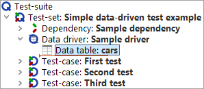
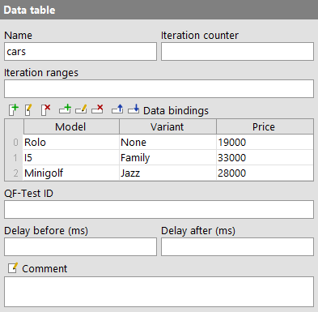
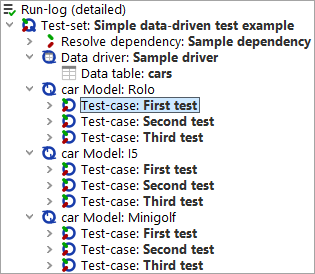
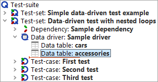
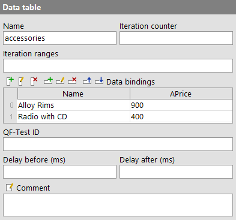
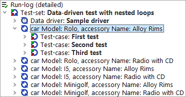

| Version 6.0.3 |
Data-driven testing is a very important aspect of test automation. In short, the goal is to
run a given test or set of tests multiple times with different sets of input data and
expected results. QF-Test has various means to store data or load external data for use in
data-driven tests. The most convenient is based on a 'Data driver' node which sets up an
environment for iterating over the sets of data combined with one or more 'Data binder' nodes
to bind the variables for test execution. Note that there is no 'Data binder' node as such.
The name serves as a generic term for the specific nodes like a 'Data table' or a
'CSV data file'. This is best explained through some examples. A demo test-suite with simple
and advanced examples named datadriver.qft is provided in the directory
doc/tutorial below QF-Test's root directory. Please take care
to store modified test-suites in a project-related folder.
|
|  | ||
|
| Figure 20.1: A simple data-driven test | ||
The image above shows a 'Test-set' with a 'Data driver' node that contains a single 'Data binder' in the form of a 'Data table' node. The contents of the 'Data table' are as follows:
|
|  | ||
|
| Figure 20.2: 'Data table' example | ||
When the 'Test-set' is executed, it will iterate over the rows of the 'Data table' shown above. For each of the three iterations the values of the respective row in the table are bound to the variable named in the matching column header. Thus, during the first iteration the variable named "Model" is bound to "Rolo", "Variant" to "None" and "Price" to "19000". During the second iteration, "Model" is set to "I5" and to "Minigolf" during the third and last iteration. For each iteration, all 'Test-case' child nodes of the 'Test-set' are run.
The following image shows a run-log for the above 'Test-set'.
|
|  | ||
|
| Figure 20.3: Run-log of a data-driven test | ||
The next example shows that data-driven testing is not limited to a single loop:
|
|  | ||
|
| Figure 20.4: Data-driven test with nested loops | ||
The 'Data driver' now contains a second 'Data table' node with the following contents:
|
|  | ||
|
| Figure 20.5: Second data table example | ||
The 'Test-set' will now go through a total of six iterations because for each of the three iterations of the outer loop "cars", both iterations of the inner loop "accessories" will be run as shown in the following run-log.
|
|  | ||
|
| Figure 20.6: Run-log of a data-driven test with nested loops | ||
Note The extremely useful dynamic names of the loop nodes in the run-logs are obtained by setting the attribute 'Name for loop pass in the run-log' to the value "car Model: $(Model)"in the first and to "car Model: $(Model), accessory Name: $(Accessory)" in the second example. As you can see, that name is expanded individually for each iteration, so you can make use of the variables bound for that iteration.
As seen in the example above the 'Data driver' node must be placed in a 'Test-set' node, between the optional 'Dependency' and 'Setup' nodes. When the 'Test-set' is executed it will check for 'Data driver' and run it. The contents of the 'Data driver' node are not limited to 'Data binders'. Like a normal 'Sequence' the 'Data driver' node can hold any executable node to be able to perform any setup that may be required to retrieve the data. Thus it is also possible to share 'Data binders' by putting them inside a 'Procedure' and calling the 'Procedure' from inside the 'Data driver'.
Conceptually, a 'Data binder' represents a loop where a different set of variables is bound for each iteration. A 'Data binder' must be registered with a name in the 'Data driver' context of a 'Test-set'. This ensures that the loop can be interrupted by a 'Break' node with the same name. Once the 'Test-set' has run the 'Data driver' node, it will iterate over the registered data loops and perform the tests.
In case of nested loops the 'Data binder' that was registered first represents the outermost loop. Its variables are bound first and have lesser precedence than the variables from the inner loop(s).
We provide a couple of examples for reading CSV or Excel files in the
test-suite doc/tutorial/datadriver.qft.
Besides the 'Data table' node there are various other means for binding data in a data driver. The 'Excel data file', 'CSV data file', 'Database' and 'Data loop' nodes are all explained in detail in section 38.4.
It is also possible to bind data by calling the 'Procedures'
qfs.databinder.bindList or qfs.databinder.bindSets in the
standard library qfs.qft. These take as parameters strings with lists or sets
of values to split and iterate over. Please see tutorial chapter 8 for information about
the standard library.
And finally, data can be bound directly from Jython (and analogous from Groovy and JavaScript) with the help of the
databinder module, which offers the following methods:
|
|
|
||||||||||||||||||||||||||||||||||||||||||||||||||||||||||||||||
Some examples:
|
|
|
|||
|
| Example 20.1: Examples for use of the databinder module | |||
| Last update: 9/6/2022 Copyright © 1999-2022 Quality First Software GmbH |